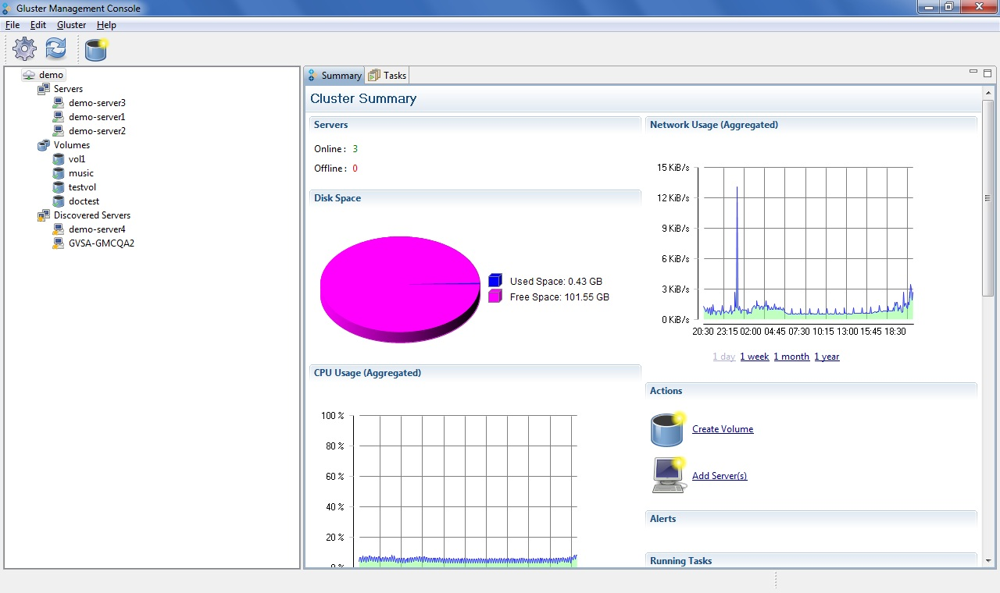

The console enables you to monitor your cluster resources from the Summary tab. To display the summary of your cluster, click the cluster node from the left pane of the console window. The summary of the selected cluster is displayed in the right pane of the console window.
